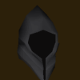

<div id="content">
<div id="article">
<div class="sectionHeader">
<div class="left">
<div class="right">
<h1 class="plaque">
09-August-2021
</h1></div>
</div>
</div>
<div class="section">
<div class="brown_background">
</div>
<div id="contrast_panel">
<div id="infopane">
<div class="title thrd">A Fair Start

</div>
</div>
<div class="phold" id="nocontrols"></div>
<div class="actions" id="top">
<table>
<tr>
<td class="commands center">
<ul class="flat first-child">
<li><a href="./archives.html"> Back to Update List</a></li>
<li>
<a href="/"> Refresh</a>
</li>
</ul>
</td>
</tr>
<tr>
</tr>
</table>
</div>
<div class="" id="contentmsg">
<a class="msgplace" name="0"></a>
<table cellspacing="0" class="message jmod">
<tr>
<td class="leftpanel J-Mod">
<div class="msgcreator uname">
 
??
</div>

<div class="modtype">Website Developer</div>
<div class="msgcommands">

<br/>
</div>
</td>
<td class="rightpanel">
<div class="msgtime">
09-August-2021 10:55
<br/>
</div>
<div class="msgcontents">
<!-- Post goes right in here -->
<p>
    This week in 2009scape, we are looking at a new staff member, Mico, to our team as our moderator. 
    They will be assisting the developers with community issues to let developer solely focus on developing 2009scape.
    
    <br/>
<br/>
<quoteblock>
      This has not been decided without some serious thought and feedback from very respected members of the community and of the project. 
      Over the next couple of months, some big changes are coming to the XP rates we offer. I do want to preface this with the fact that this is not a wipe. 
      See the details below: <br/><br/>
          All 10x and 20x accounts will have their experience squashed <b>down to the 5x equivalent</b> in 2 months' time. <b>(10/4/2021)</b> <br/>
          Squished accounts <b>will not</b> be eligible for the hall of fame. <br/>
          Squished accounts <b>will</b> be eligible to compete on the highscores. <br/>
          Squished accounts <b>will</b> keep all items and quests.  <br/> <br/>
<b>Why are we making this change?</b> <br/><br/>
        I, along with several other members of the community and staff, feel that these extremely high XP rates are ultimately harmful to the community and the game. 
        My observations over the last few months have confirmed this. There is a general correlation between higher xp rates sticking around for the least amount of 
        time. In other words, people who play on these very high rates tend to leave after a very short amount of time, usually because they accomplish all the goals
         they set for themselves relatively easily. For this reason, along with an imbalance in who can take hold of the resource market based on how quickly they can
          level and gather those resources, has brought us to the conclusion that removing these absurdly high rates is in the best interest of the game. 
          We have thought long and hard about what the best approach to this problem would be, and this is what we have come up with. It is my hope that 2 months 
          will be more than adequate for people to get their accounts into a position where they will not be harmed nearly as much by the squash of the XP, and I also
           hope it will allow many to keep their 99s. My interests always lie with what I believe is best for the long term health of the project. <br/>
<br/>
            I genuinely and deeply appreciate all of you and I hope I was able to reach an agreeable solution to this problem. 
            <br/>
<br/>
            Ceikry
    </quoteblock>
<br/>
<br/>

      As we are working on some bigger updates behind the scenes here are the list of updates for this week. Worth the wait for future 
      waits for bigger updates!


    </p><ul>
<li>The ability to create new 10x and 20x accounts was removed today.</li>
<li>Updated client with new config settings</li>
<li>Corrected combat level formula</li>
<li>Removed random message when talking to Simon Templeton. Presumably was used for debugging purposes when adding the authentic Sceptre dialogue.</li>
<li>Fixed potential bug with boostable stats</li>
<li> Fixed an exploit related to farming</li>
<li>Made penguin spying infallible</li>
<li> Fixed bug with osman's dialogue</li>
<li>Fixed issue where tree spirit wouldn't spawn if your combat level was &gt;100 due to index out of range exception.</li>
</ul>
</div>
</td>
</tr></table>
</div>
<div class="actions" id="bottom">
<table>
<tr>
<td class="commands center">
<ul class="flat first-child">
<li><a href="./archives.html"> Back to Update List</a></li>
<li>
<a href="/"> Refresh</a>
</li>
</ul>
</td>
</tr>
<tr>
</tr>
</table>
</div>
</div>
</div>
</div>
</div>